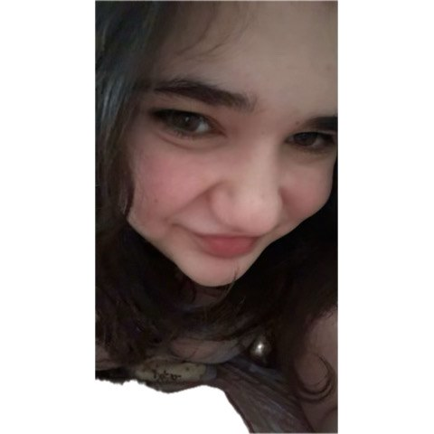
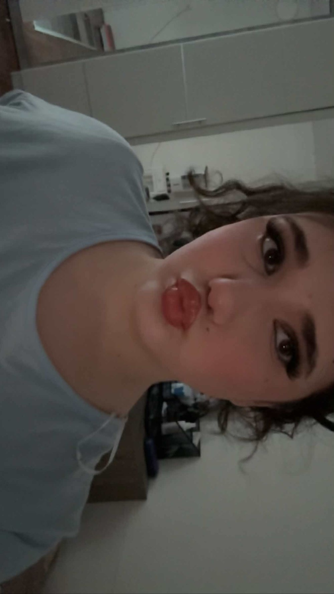
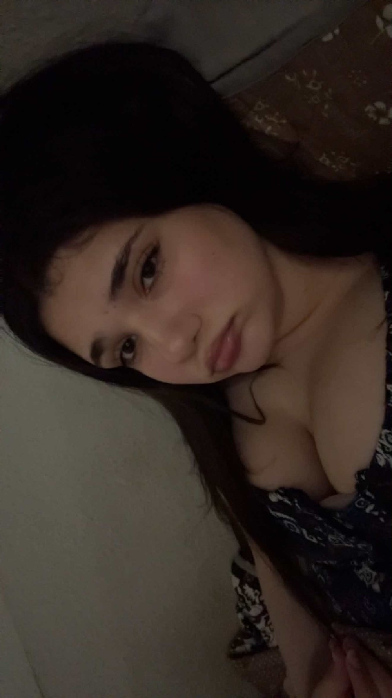
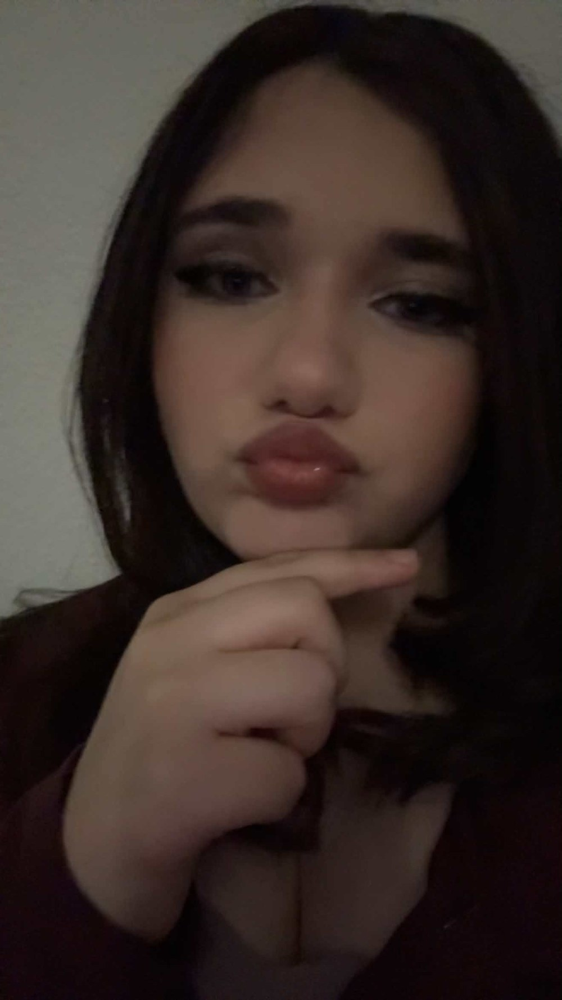
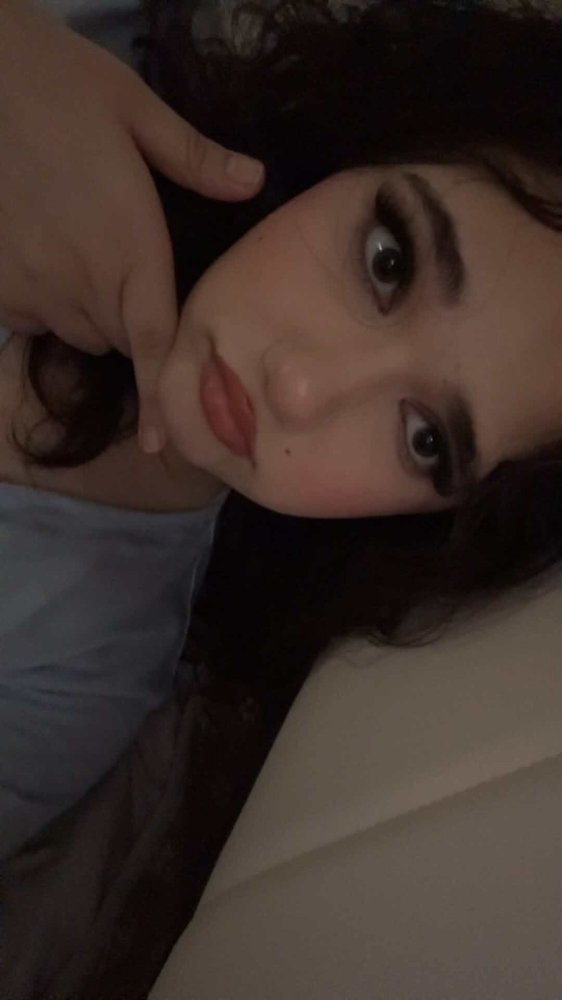
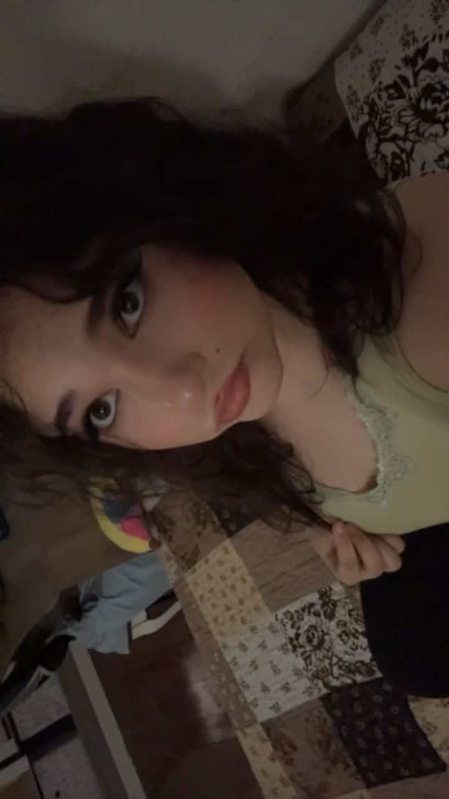
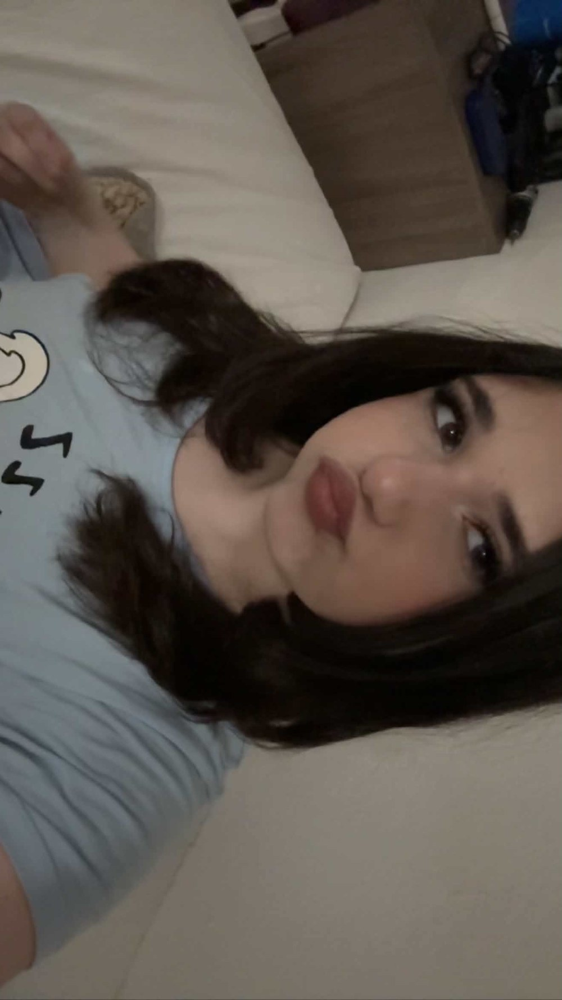
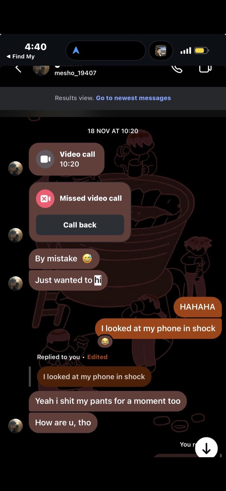
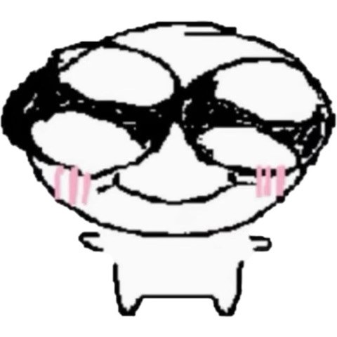
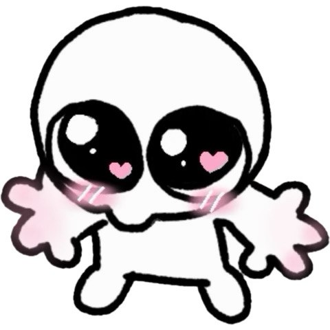

And I’d choose you again.
There are some things I can say out loud, and some things I wanted to leave somewhere you could return to whenever you need them.


Pull me gently upward...
And please don't speed-run this part, you menace.
The envelope may have been dramatic. The letter wasn't. Every word below is yours.







